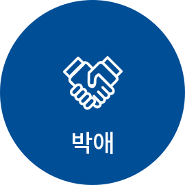
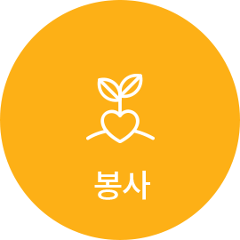

과학적 탐구정신을 갖고 최근 의학 지견을 개발, 습득하고 이를 업무에 적용하여 그 결과를 비판적으로 평가할 수 있어야 한다.
Mission
박애 · 봉사 · 애국의 건립이념을 바탕으로 의료인의 전문적 자질을 갖추고, 사회가 필요로 하며, 의학발전에 기여하는 의사를 양성한다.

그늘진 곳, 소외된 삶들을 보살핍니다.
보증금 없는 병원, 새생명 찾아주기 운동 해외 심장병 어린이 무료수술, 의료 취약지 병원 운영 등으로 어려운 환경의 위태로운 생명을 사랑으로 돌봅니다. 가낮은데, 외딴 삶들을 외면하지 않는 것이 길병원 정신입니다.

손을 비워서 마음을 채우면 행복합니다.
봉사와 나눔이야말로 선진사회의 '소금'입니다. 가천미추홀청소년봉사단의 씩씩한 기상. '심청효행대상'에 빛나는 고결한 효성은 세상을 밝히는 마음의 등불입니다. 가천문화재단과 가천박물관이 베푸는 문화 나눔이 훈훈하고 격조 높은 21세기 문화 코리아를 열어갑니다.
인재양성이 나라사랑의 시작이자 끝입니다.
사람이 바로 그 공동체의 미래입니다. 가글로벌 리더를 배출하고, 의료인재를 가꾸어 내는 꿈이 가천대학교의 글로벌, 메디컬 이 두 캠퍼스에 담겨있습니다. 기초과학을 연구하는 '가천뇌과학연구원', '이길여 암·당뇨연구원'은 21세기 초일류 코리아의 디딤돌입니다.
의업을 평생의 천직으로 생각하여 보다 뛰어난 의사가 되기 위하여 불철주야 노력해오신 여러분께 우리 병원을 소개할 기회를 가지게 된 것을 기쁘게 생각합니다.
가천의대길병원은 1,450병상 규모와 모든 분야의 전문 진료영역을 갖추고 있을 뿐만 아니라 최상의 의료진으로 진료, 연구, 교육 모두에서 뛰어난 성과를 거두어 온 대한민국 최고의 종합병원 중 하나입니다.
AI시대에 선도적으로 IBM인공지능 '왓슨온콜로지'를 국내최초로 도입하여 환자의 진료에 사용하고있고 국가지정연구중심병원에 선정되어 최첨단 연구수행을 하고 있습니다. 세계 수준의 연구소로 인정되는 '뇌과학 연구원'과 '이길여 암 당뇨연구원'을 부설기관으로 두어 엄청난 발전 잠재력을 가지고 있으며, 뇌과학연구원은 아시아 최초로 개발된 7T MRI를 보여하여 뇌 신경질환의 연구의 첨단에 서 있고 더 나아가 11 7T MRI를 개발하고 있습니다.
'응급의료 전용 헬기'와 '권역외상센터'를 대학병원 최초로 운영하고 있으며 다방면의 국가지정 센터들을 위탁 운영하고있어 공공의료에도 혁혁한 기여를 하고 있습니다. 빠른 속도로 발전하는 가천의대의 2019년 입시 성적은 의과대학 최상위권을 차지하여 명문사학으로 자리매김하였습니다.
길병원 임상/수련 환경과 근로 환경에 있어서 인턴과 전공의 수련에도 최적화된 공간입니다. 중증에서 경증의 다양한 스펙트럼의 환자들이 길병원에 찾아오기 때문에 전문의 취득 후 진로 선택에 큰 경쟁력을 갖게 되었다고 본 병원 출신의 많은 인턴과 전공의 선생님들이 이야기하고 있습니다. 또한, 최근 많은 노력으로 충분한 휴식시간을 확보하여 2018년 전공의 수련병원 평가에서 전공의들이 평가한 근무환경 만족도, 법정 근무시간 준수 등의 항목에서 최고 수준의 평가를 받았습니다.
길병원은 인턴과 전공의들의 근무시간 관리, 근무환경개선, 복지개선, 건강관리, 교육수련부 등의 관련 부서 강화, 각 과별 책임지도 전문의 제도 등을 계획하고 실행해 나가고 있습니다. 인턴통합당직제를 운영하여 인턴들의 근무 부담을 줄여왔으며 최근 설문조사에서 이루어진 인턴의 요구사항을 대폭 반영하여 ABGA, EKG, portable ventilator 등의 기계 확충을 추진 중에 있습니다. 매년 우수전공의들을 선발하여 해외학술대회 참가 비용을 지원하고 있습니다. 최근에는 전공의 휴게공간을 고급화 하였고 병원 외부의 별도 공간에 신입 직원용 기숙사건물을 오픈하여 2020년 입사 인턴 중 타 지역에서 오시는 선생님들께는 2인 1실 기숙사를 추첨 배정하여 먼 곳에서 오시는 선생님들이 원룸을 구하는 어려움을 줄여드릴 예정입니다.
수련받는 선생님들이 행복하고 만족하실 수 있도록 인턴과 전공의들이 교육과 복지를 위해 더욱 노력하겠습니다. 길병원은 여러분들에게 최고의 수련병원이 될 것입니다.
감사합니다.
가천대 길병원 교육수련부장 강승걸
업무정의
교육수련부는 「전문의의 수련 및 자격인정 등에 관한 규정」 및 「전공의의 수련 환경 개선 및 지위향상을 위한 법률」에 근거하여 전공의의 임용에서 수료까지의 전 과정을 지원, 육성, 관리하는 업무를 담당하는 부서로서 채용, 임용등록, 교육, 파견, 복무관리, 평가, 수료 등을 수행하고 수련환경평가를 주관한다.